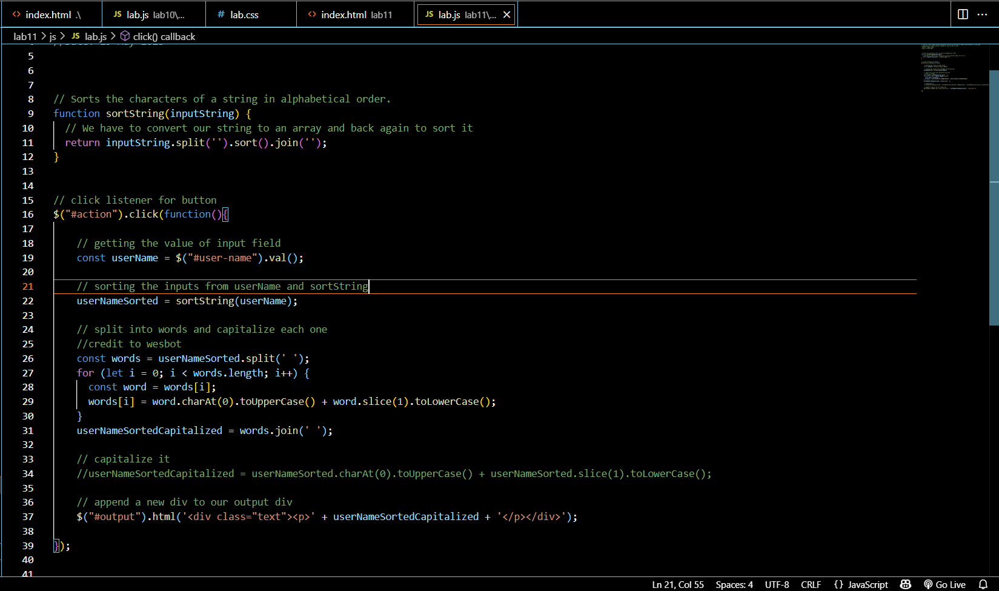

Output
Lab 11: Javascript Events and Forms
Subject
The goal of this lab was to work with jQuery and utilze making buttons and input fields that take user input and display it on our webpages. It takes user input and shuffles it around to create something new!
Challenges
We struggled a bit with the the javascript for this lab because we had to work with existing functions that javascript has within its program, such as .val(), .split(), .sort(), and .join(). We were familiar with a few of these which helped some but they were still a pretty new concept compared to other things this lab required. We also wanted our output to be capitalized on our page so we incorperated that which turned out to be more difficult that expected, we ended up asking Wesbot for help and were able to figure out a solution based on its suggestions.
Results
The results of this lab can be viewed by adding your own input into the field we created! :D Inspecting the page and looking at the console will also show you what is happening behind the scenes when the buttons are clicked. Instead of creating a bypass for allowing the javascript to be shown we linked it correctly within the head tags of our html. We also included some screenshots to show our code.
This is a screenshot of the javascript for this page.
